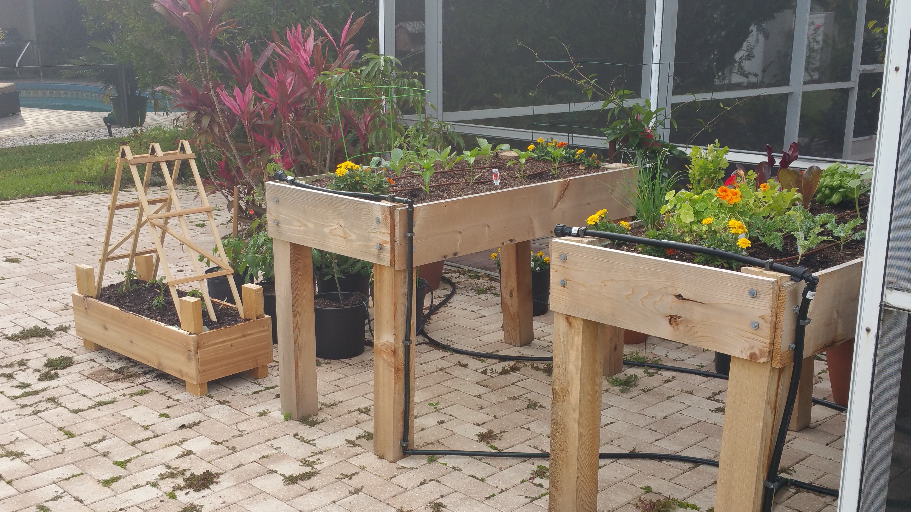
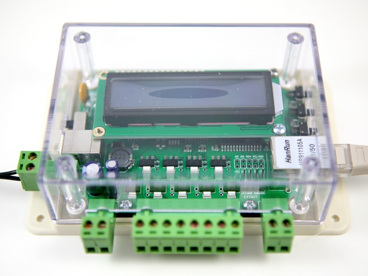
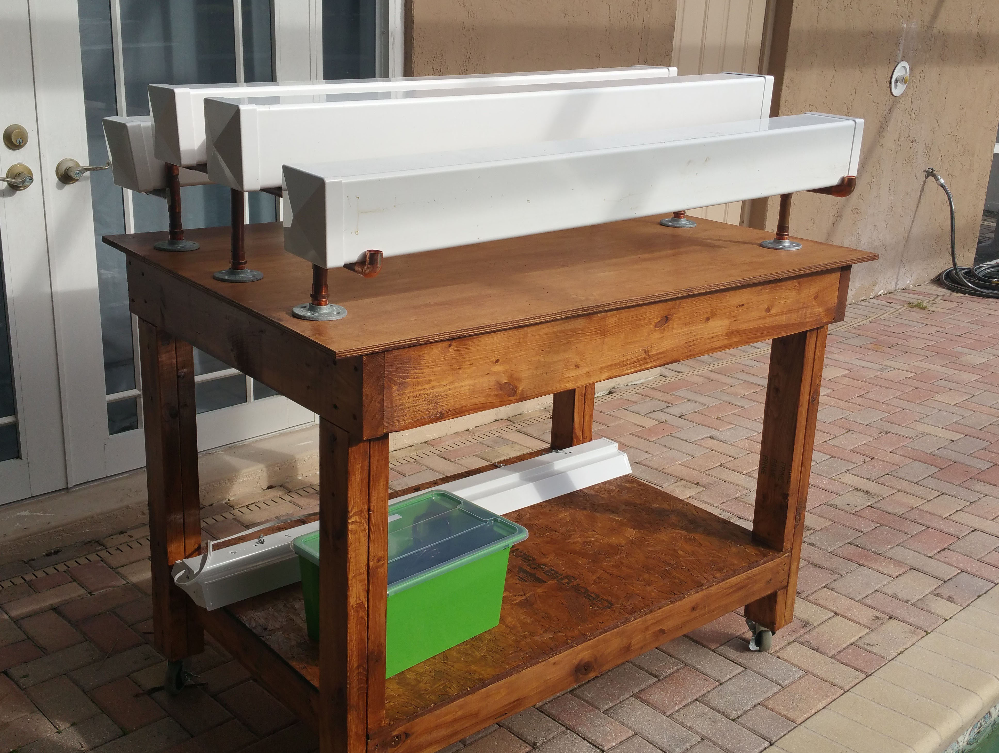
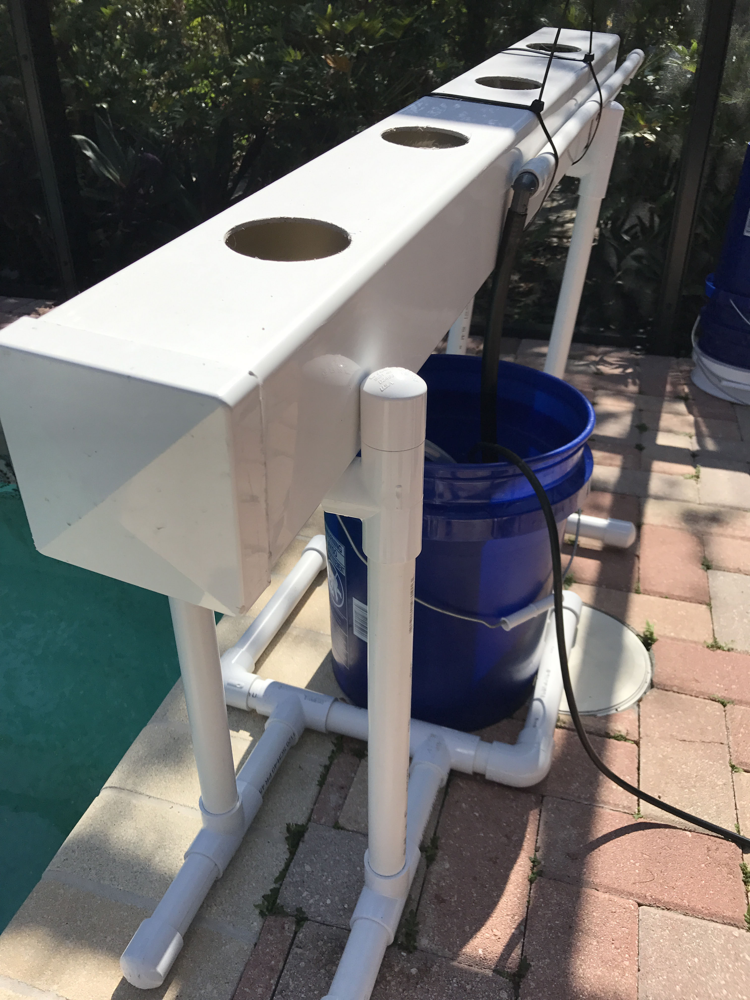
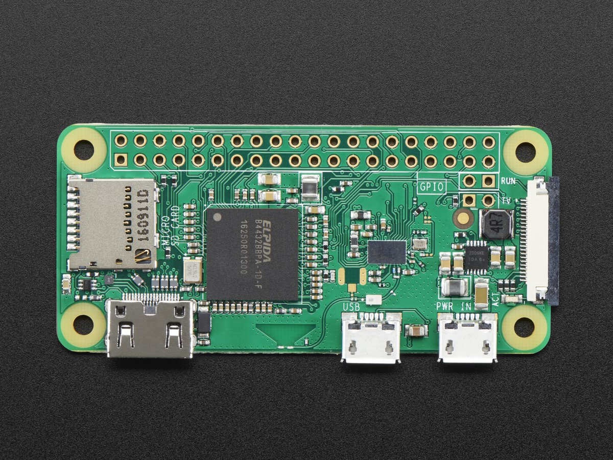
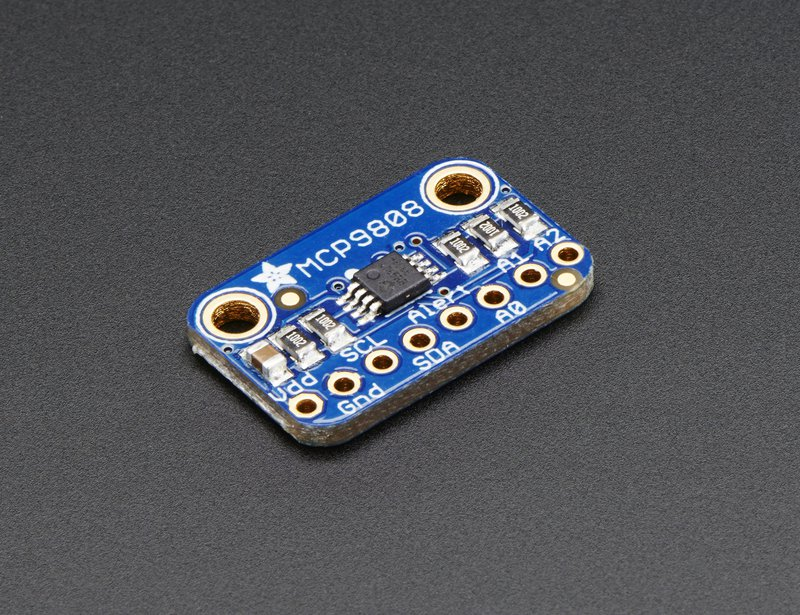
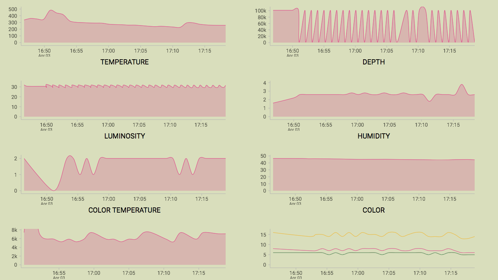

Victor
Building Monitored, Secured, And Self-Sustaining Hydroponic Gardens

Ben Carothers
Victor is...
- Built to help keep your garden alive
- Focused on collecting data
- An opinionated framework
Design Criteria
Victor should be Scalable, Extensible, and Secure
Why?
I find a lot of value in gardening
Gardening is hard
Technology should make it easier
Open Agriculture
- Global population will be over 9 billion by 2050
- We're using most arable land and too much water
- Food production isn't distributed among food eaters
Hydroponics
Pros
- Higher yields compared to soil gardens
- Can grow where generally inhospitable
- Semi-closed system
Cons
- Constant monitoring and maintenace
- System failure and disease
- It's only semi-closed
NFT
Gardening is hard
Service Oriented Architecture
- Container-Gardening
- Gardeners-Log
- Gardeners-Shed
- Victor
Container-Gardening
Deals with taking measurements, reporting them to the database, and controlling active components
Raspberry Pi
Its Parts
- The Gardener
- Controllers
- Sensors and Components
Sensors
Each Sensor Runs in a Container
FROM resin/rpi-raspbian:jessie
RUN apt-get update && apt-get install -y \
git-core \
python \
python-pip \
RUN pip install w1thermsensor
RUN pip install schedule
ENV PYTHONPATH="${PYTHONPATH}:/data/container-gardening/reporter/"
RUN git clone https://github.com/btcrs/container-gardening.git /data/container-gardening
CMD ["python", "/data/container-gardening/temperature/1wire/simple_temperature.py"]
docker build -t btcrs/temperature .
Containers are Composed Into Machine Deployments
version: '2'
services:
temperature:
environment:
- GARDENER
build: ../../dockerfiles/temperature/temperature/
privileged: true
devices:
- /dev/ttyAMA0:/dev/ttyAMA0
- /dev/mem:/dev/mem
volumes:
- /data
...
The Other Services
Victor
Uses the other three services to provide a valuable user experience- Angular Web Application
- Hosted on Github Pages
- Primarily Time Series Charts
Dashboard
Dashboard
Gardeners-Log
Handles all CRUD operations for the database
- Serverless
- Hosted with Amazon Lambda
- Node functions and DynamoDB
Function
const dynamoDb = new AWS.DynamoDB.DocumentClient();
module.exports.create = (event, context, callback) => {
const params = {
TableName: process.env.DYNAMODB_TABLE,
Item: {
parameter: data.parameter,
value: data.value,
createdAt: timestamp,
},
};
dynamoDb.put(params, (error, result) => {
if (error) {
console.error(error);
return;
}
});
};
Gardeners-Shed
Mediates communication between users and the garden- Similar to Gardeners-Log's Architecture
- Relays messages
- Protects against unauthorized control
Security
- Passwords are important
- Use best practices
- Use third-party providers
- Limit the number of Communicators
- Open data
Room For Growth
- Victor can scale
- Everyone wants data
- New parts and sensors
- Issues in IoT